library(igraph) # For network functionalityWarning: package 'igraph' was built under R version 4.2.3library(data.table)
library(ggplot2)library(igraph) # For network functionalityWarning: package 'igraph' was built under R version 4.2.3library(data.table)
library(ggplot2)# Complete graph with 4 nodes
gr <- make_full_graph(4)
print(gr)IGRAPH 78443be U--- 4 6 -- Full graph
+ attr: name (g/c), loops (g/l)
+ edges from 78443be:
[1] 1--2 1--3 1--4 2--3 2--4 3--4plot(gr)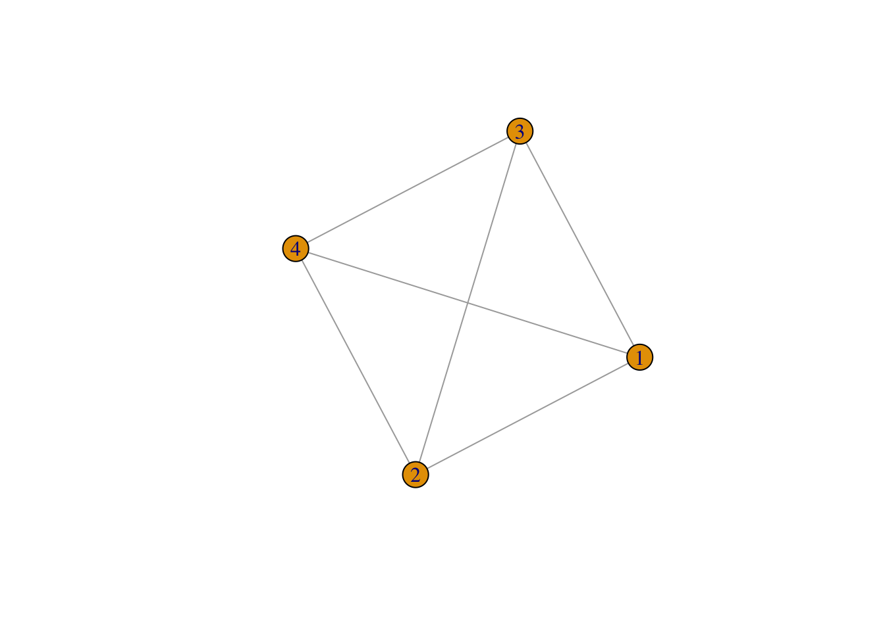
Plot different graphs each with 16 vertices, but different connections between vertices:
gr <- make_full_graph(16)
plot(gr)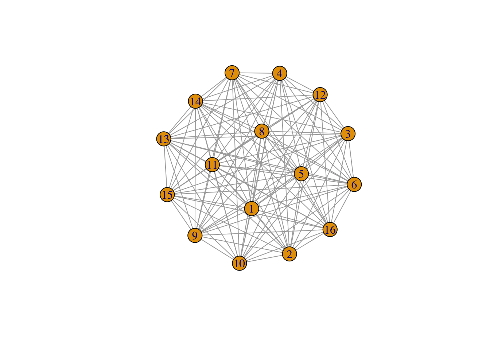
gr <- make_ring(16)
plot(gr)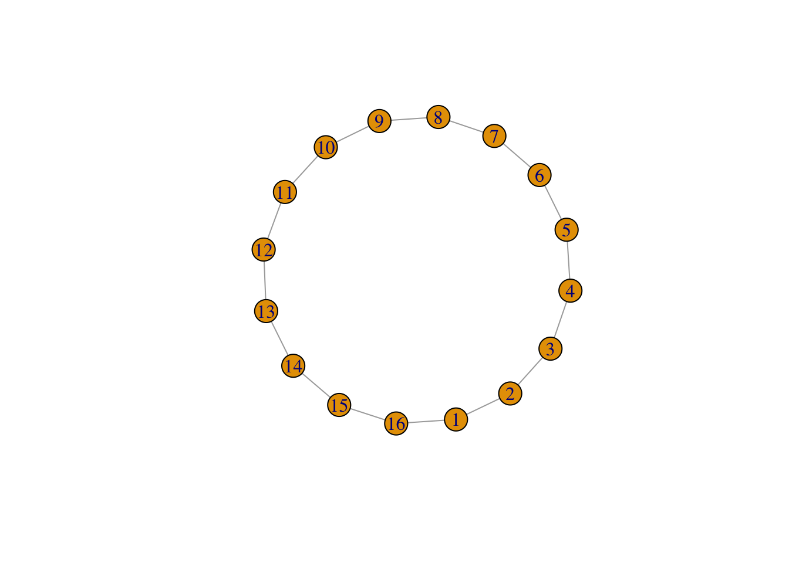
gr <- make_ring(16, circular = FALSE)
plot(gr)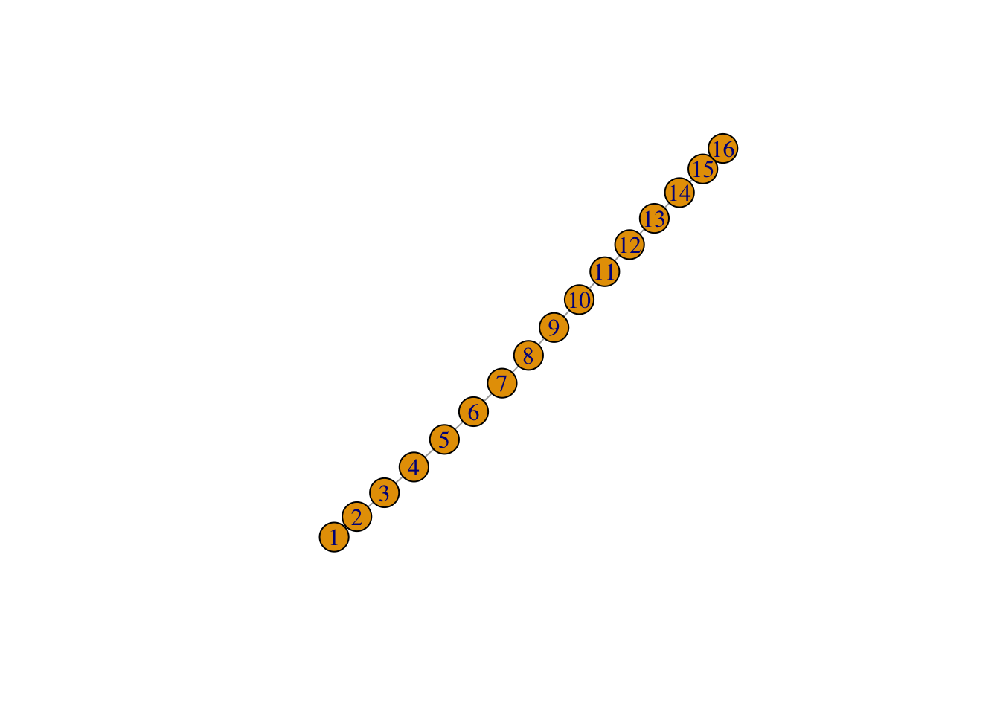
gr <- make_lattice(c(4, 4))
plot(gr)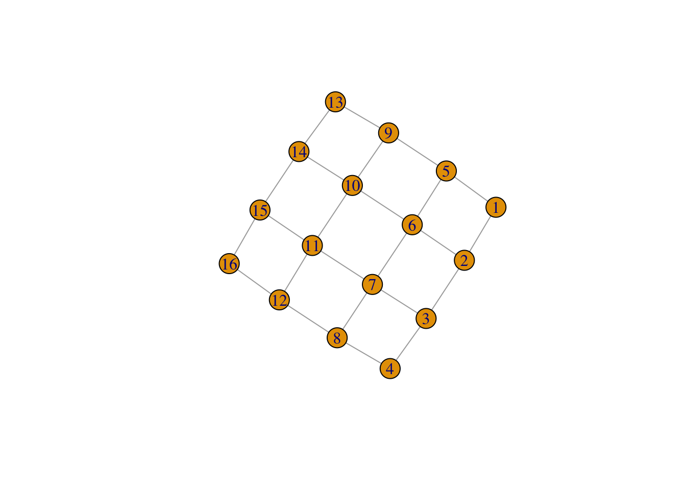
Compare a connected graph with 16 vertices to an Erdős-Rényi G(n, p) graph with 16 vertices:
plot(make_full_graph(16), layout = layout_in_circle)
plot(sample_gnp(16, 0.2), layout = layout_in_circle)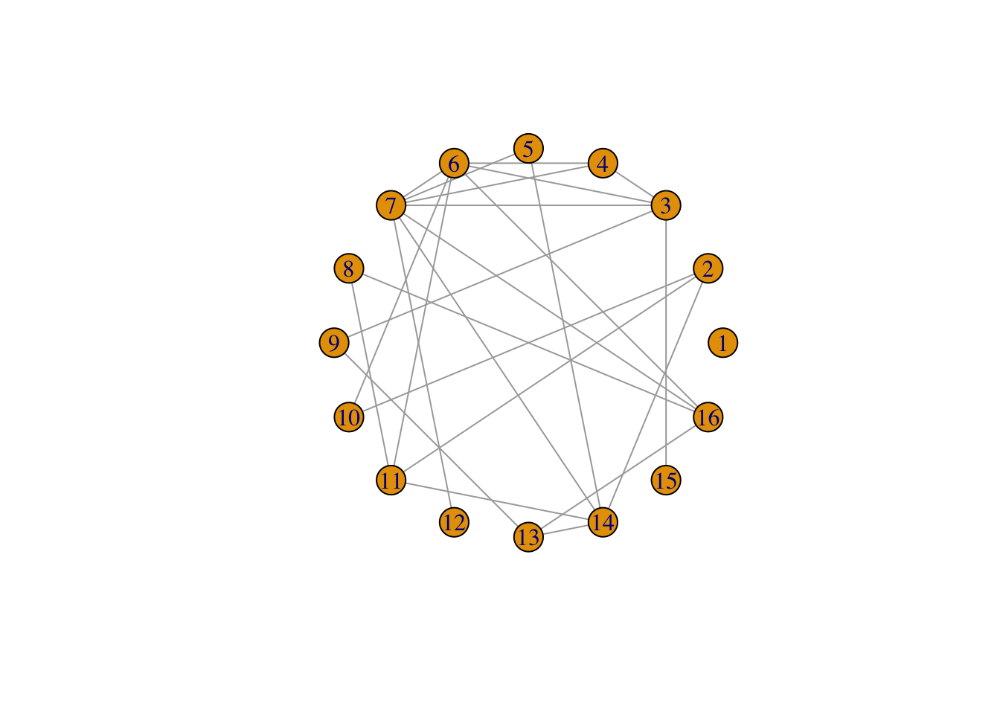
Other random graphs: The “small-world” model by Watts and Strogatz, where there are connections between neighbours, some of which are randomly rewired:
plot(sample_smallworld(1, 16, 2, 0.1), layout = layout_in_circle)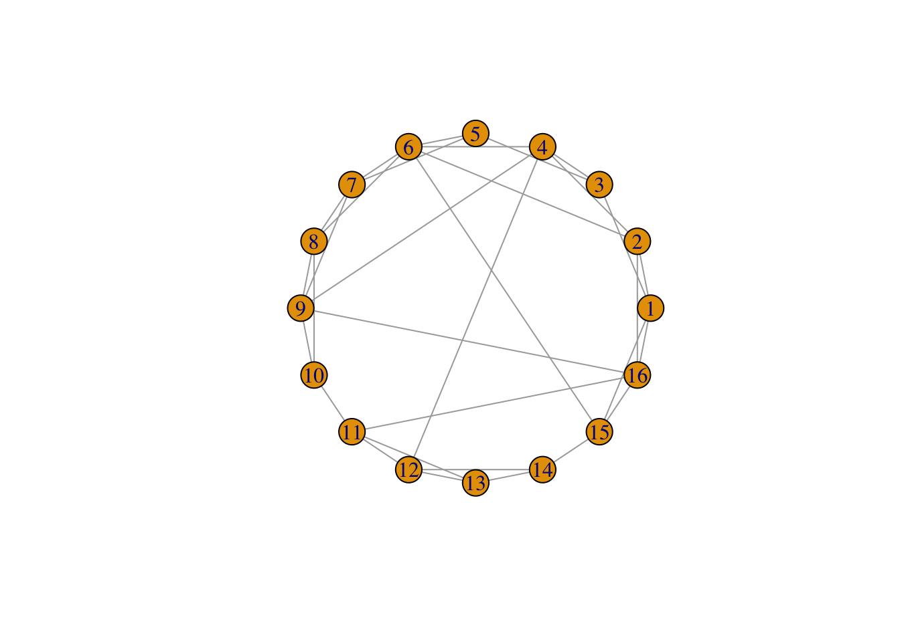
The “preferential attachment” model by Barabási and Albert, which is built by adding nodes one at a time, and each time a node is added, it is connected to other nodes, where the connection is more likely to be made to a node that already has more connections (a “rich get richer” dynamic).
plot(sample_pa(16, directed = FALSE))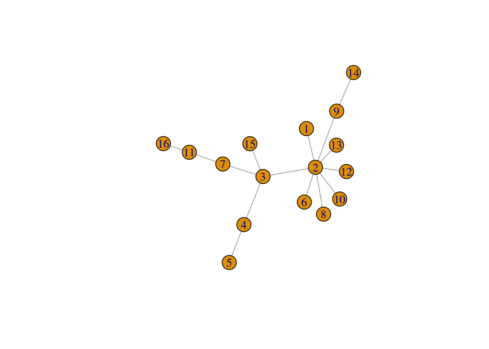
Start by making a new ‘lattice’ graph:
network <- make_lattice(c(5, 5))
print(network)IGRAPH b36dbbd U--- 25 40 -- Lattice graph
+ attr: name (g/c), dimvector (g/n), nei (g/n), mutual (g/l), circular
| (g/l)
+ edges from b36dbbd:
[1] 1-- 2 1-- 6 2-- 3 2-- 7 3-- 4 3-- 8 4-- 5 4-- 9 5--10 6-- 7
[11] 6--11 7-- 8 7--12 8-- 9 8--13 9--10 9--14 10--15 11--12 11--16
[21] 12--13 12--17 13--14 13--18 14--15 14--19 15--20 16--17 16--21 17--18
[31] 17--22 18--19 18--23 19--20 19--24 20--25 21--22 22--23 23--24 24--25plot(network)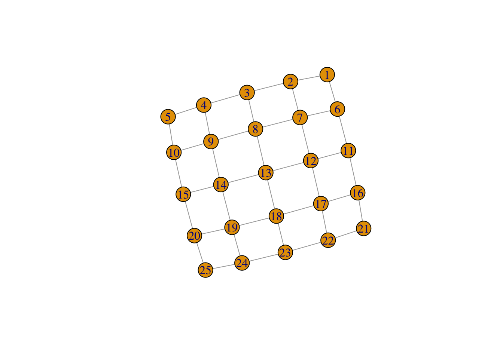
Some simple calculations: vcount() or ecount() give the number of vertices or edges in the graph; degree() gives the number of neighbours of each vertex.
vcount(network)[1] 25ecount(network)[1] 40degree(network) [1] 2 3 3 3 2 3 4 4 4 3 3 4 4 4 3 3 4 4 4 3 2 3 3 3 2With igraph, you can get and set attributes of the entire graph using the $ operator. For example, let’s set the graph’s layout to a grid:
network$layout <- layout_on_grid(network)
print(network)IGRAPH b36dbbd U--- 25 40 -- Lattice graph
+ attr: name (g/c), dimvector (g/n), nei (g/n), mutual (g/l), circular
| (g/l), layout (g/n)
+ edges from b36dbbd:
[1] 1-- 2 1-- 6 2-- 3 2-- 7 3-- 4 3-- 8 4-- 5 4-- 9 5--10 6-- 7
[11] 6--11 7-- 8 7--12 8-- 9 8--13 9--10 9--14 10--15 11--12 11--16
[21] 12--13 12--17 13--14 13--18 14--15 14--19 15--20 16--17 16--21 17--18
[31] 17--22 18--19 18--23 19--20 19--24 20--25 21--22 22--23 23--24 24--25plot(network)You can also modify properties of the vertices and of the edges, using V() and E() respectively.
V(network)$color <- "azure"
E(network)$color <- "pink"
plot(network) # lovelyYou can use V(network)[[]] or E(network)[[]] to see the properties of the vertices/edges laid out as a data frame:
V(network)[[]]+ 25/25 vertices, from b36dbbd:
color
1 azure
2 azure
3 azure
4 azure
5 azure
6 azure
7 azure
8 azure
9 azure
10 azure
11 azure
12 azure
13 azure
14 azure
15 azure
16 azure
17 azure
18 azure
19 azure
20 azure
21 azure
22 azure
23 azure
24 azure
25 azureE(network)[[]]+ 40/40 edges from b36dbbd:
tail head tid hid color
1 1 2 1 2 pink
2 1 6 1 6 pink
3 2 3 2 3 pink
4 2 7 2 7 pink
5 3 4 3 4 pink
6 3 8 3 8 pink
7 4 5 4 5 pink
8 4 9 4 9 pink
9 5 10 5 10 pink
10 6 7 6 7 pink
11 6 11 6 11 pink
12 7 8 7 8 pink
13 7 12 7 12 pink
14 8 9 8 9 pink
15 8 13 8 13 pink
16 9 10 9 10 pink
17 9 14 9 14 pink
18 10 15 10 15 pink
19 11 12 11 12 pink
20 11 16 11 16 pink
21 12 13 12 13 pink
22 12 17 12 17 pink
23 13 14 13 14 pink
24 13 18 13 18 pink
25 14 15 14 15 pink
26 14 19 14 19 pink
27 15 20 15 20 pink
28 16 17 16 17 pink
29 16 21 16 21 pink
30 17 18 17 18 pink
31 17 22 17 22 pink
32 18 19 18 19 pink
33 18 23 18 23 pink
34 19 20 19 20 pink
35 19 24 19 24 pink
36 20 25 20 25 pink
37 21 22 21 22 pink
38 22 23 22 23 pink
39 23 24 23 24 pink
40 24 25 24 25 pinkThe “color” attribute is now also listed when we print the network:
networkIGRAPH b36dbbd U--- 25 40 -- Lattice graph
+ attr: name (g/c), dimvector (g/n), nei (g/n), mutual (g/l), circular
| (g/l), layout (g/n), color (v/c), color (e/c)
+ edges from b36dbbd:
[1] 1-- 2 1-- 6 2-- 3 2-- 7 3-- 4 3-- 8 4-- 5 4-- 9 5--10 6-- 7
[11] 6--11 7-- 8 7--12 8-- 9 8--13 9--10 9--14 10--15 11--12 11--16
[21] 12--13 12--17 13--14 13--18 14--15 14--19 15--20 16--17 16--21 17--18
[31] 17--22 18--19 18--23 19--20 19--24 20--25 21--22 22--23 23--24 24--25Finally, we can also use brackets [] to change properties of only certain vertices/edges.
V(network)[12]$color <- "orange"
plot(network)V(network)[color == "orange"]$color <- "pink"
plot(network)Pink is contagious:
V(network)[.nei(color == "pink")]$color <- "pink"
plot(network)What happens if you re-run the last two lines above several times?
Answer: The number of pink points in this network gradually increase.
Other interesting attributes for vertices include:
V(network)$label <- NA # text label for the vertices (set to NA for no labels)
V(network)$size <- 5 # size of vertex markers
V(network)$shape <- "square" # shape of markers
plot(network)# See ?igraph.plotting for more.Here is one possible way of doing it…
network <- make_lattice(c(5, 5))Set all vertices to “susceptible” except for one “infected”
V(network)$state <- "S"
V(network)[1]$state <- "I"
# Pick plotting colours
colours <- c(S = "lightblue", I = "red", R = "pink")
# Print and loop through time steps
t_max <- 10
for (t in 1:t_max)
{
# Plot network
plot(network,
vertex.color = colours[V(network)$state],
layout = layout_on_grid,
main = paste("t = ,", t))
# Pause so we can see animation
Sys.sleep(1.0)
# Find "infector" vertices
infectors <- V(network)[state == "I"]
# Infect susceptible neighbours of infectors
V(network)[.nei(infectors) & state == "S"]$state <- "I"
# Recover infectors
V(network)[infectors]$state <- "R"
}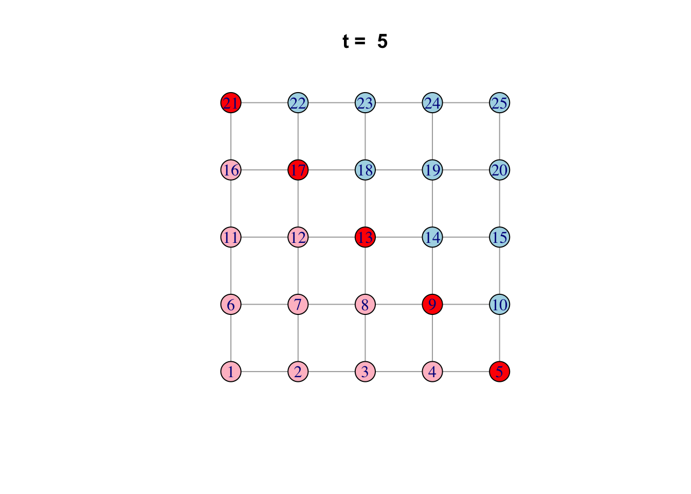
library(igraph)
library(data.table)
library(ggplot2)Set up a transmission network of n nodes by preferential attachment with affinity proportional to degree^m.
create_network <- function(n, d, layout = layout_nicely)
{
# Create the network by preferential attachment, passing on the parameters
# n and power
network <- sample_pa(n, d, directed = FALSE)
# Add the "state" attribute to the vertices of the network, which can be
# "S", "I", "R", or "V".
# Start out everyone as susceptible ...
V(network)$state <- "S"
# ... except make 5 random individuals infectious.
V(network)$state[sample(vcount(network), 5, prob = degree(network))] <- "I"
# Reorder vertices so they go in order from least to most connected. This
# is to help with degree-targeted vaccination, and also to make the
# most connected vertices plot on top so they don't get hidden.
network <- permute(network, rank(degree(network), ties.method = "first"))
# Set the network layout so it doesn't change every time it's plotted.
network$layout <- layout(network)
return (network)
}
## See how the parameter d to create_network changes the network structure
net <- create_network(40, 0)
plot(net)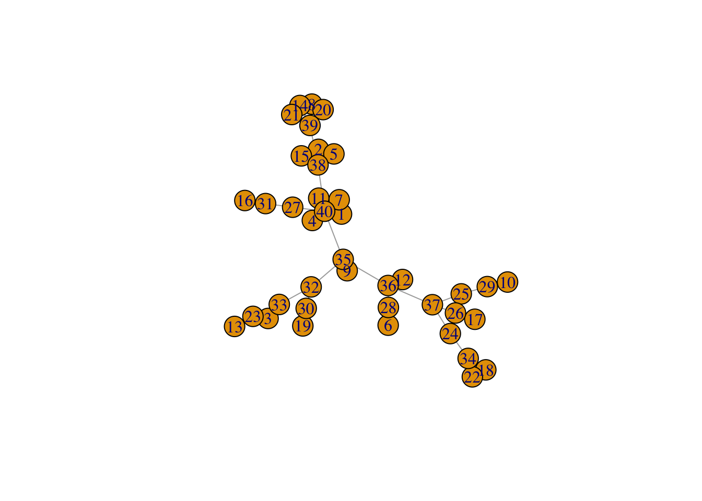
net <- create_network(40, 1)
plot(net)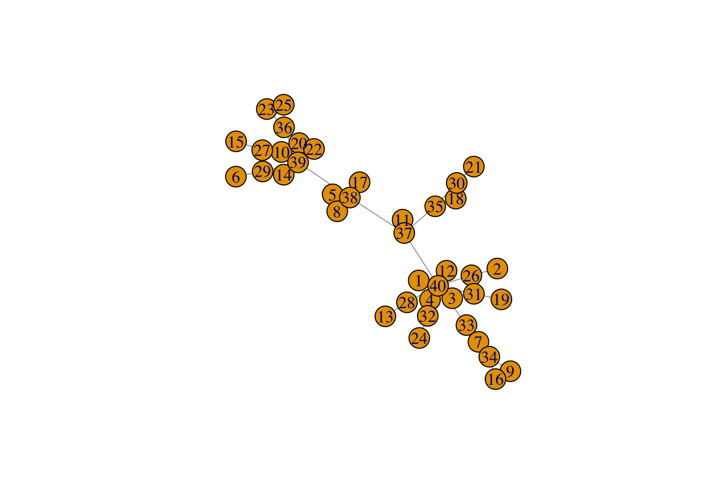
net <- create_network(40, 2)
plot(net)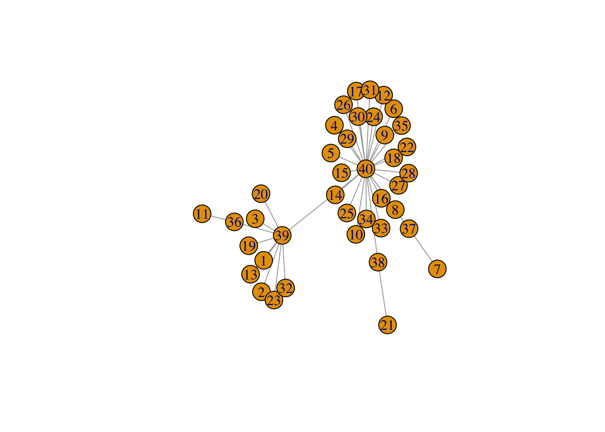
plot_degree <- function(network) { # Set up palette colors <- hcl.colors(5, “Zissou 1”)
# Classify nodes by degree
deg <- cut(degree(network),
breaks = c(1, 2, 5, 10, 20, Inf),
labels = c("1", "2-4", "5-9", "10-19", "20+"),
include.lowest = TRUE, right = FALSE)
# Plot network
plot(network,
vertex.color = colors[deg],
vertex.label = NA,
vertex.size = 4)
legend("topright", levels(deg), fill = colors, title = "Degree")}
net <- create_network(500, 1) plot_degree(net)
net <- create_network(500, 1.5) plot_degree(net)
net <- create_network(500, 2) plot_degree(net)
plot_state <- function(network) { # Set up palette colors <- c(S = “lightblue”, I = “red”, R = “darkblue”, V = “white”)
# Plot network
plot(network,
vertex.color = colors[V(network)$state],
vertex.label = NA,
vertex.size = 4)
legend("topright", names(colors), fill = colors, title = "State")}
net <- create_network(500, 1) plot_state(net)
network_step <- function(net, p) { # Identify all susceptible neighbours of infectious individuals, # who are “at risk” of infection at_risk <- V(net)[state == “S” & .nei(state == “I”)]
# Use the transmission probability to select who gets exposed from
# among those at risk
exposed <- at_risk[runif(length(at_risk)) < p]
# All currently infectious individuals will recover
V(net)[state == "I"]$state <- "R"
# All exposed individuals become infectious
V(net)[exposed]$state <- "I"
return (net)}
run_model <- function(net, t_max, p, animate = FALSE) { # Plot network degree if (animate) { plot_degree(net) Sys.sleep(2.0) }
# Set up results
dt <- list()
# Iterate over each time step
for (t in 0:t_max)
{
# Store results
dt[[length(dt) + 1]] <- data.table(
S = sum(V(net)$state == "S"),
I = sum(V(net)$state == "I"),
R = sum(V(net)$state == "R"),
V = sum(V(net)$state == "V")
)
# Plot current state
if (animate) {
Sys.sleep(0.5)
plot_state(net)
}
# Stop early if no infectious individuals are left
if (!any(V(net)$state == "I")) {
break;
}
# Run one step of the network model
net <- network_step(net, p)
}
# Return results, including empirical calculation of Rt
results <- rbindlist(dt, idcol = "t")
results$Rt <- results$I / shift(results$I, 1) # new infections per new infection last time step
return (results)}
net <- create_network(500, 1) run_model(net, 100, 0.8, TRUE)
vaccinate_network <- function(network, v, k) { # Count total population (n) and number to vaccinate (nv) n <- vcount(network) nv <- rbinom(1, n, v)
# If k > 0, vaccinate the nv most-connected individuals; if k <= 0,
# vaccinate the nv least-connected individuals.
if (k > 0) {
target <- (n - nv + 1):n
} else {
target <- 1:nv
}
V(network)[target]$state <- "V"
# Now randomly shuffle the state of a fraction 1 - abs(k) of individuals.
shuffle <- which(rbinom(n, 1, 1 - abs(k)) == 1)
V(network)[shuffle]$state <- sample(V(network)[shuffle]$state)
return (network)}
run_scenario <- function(params, nsim, nanim = 1) { results <- list()
for (sim in 1:nsim)
{
net <- create_network(params$n, params$d)
net <- vaccinate_network(net, params$v, params$k)
results[[sim]] <- run_model(net, params$t_max, params$p, animate = sim <= nanim)
cat(".")
}
cat("\n");
results <- rbindlist(results, idcol = "run")
return (results)}
params <- list( n = 500, d = 0, p = 0.8, v = 0.3, k = -0.5, t_max = 100 )
x <- run_scenario(params, nsim = 50) ggplot(x) + geom_line(aes(x = t, y = R, group = run)) ```
Return to the practical here.